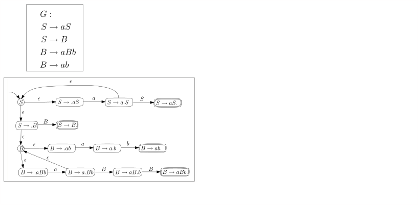
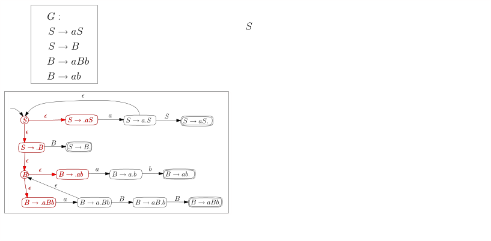
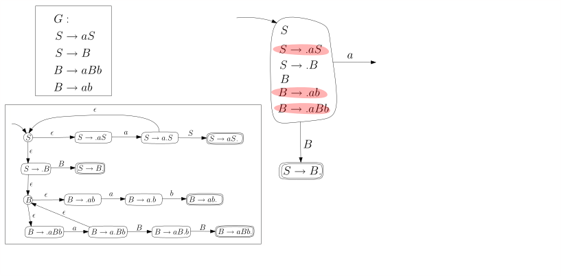
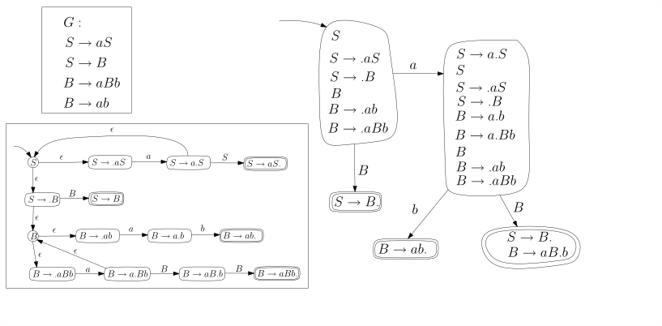
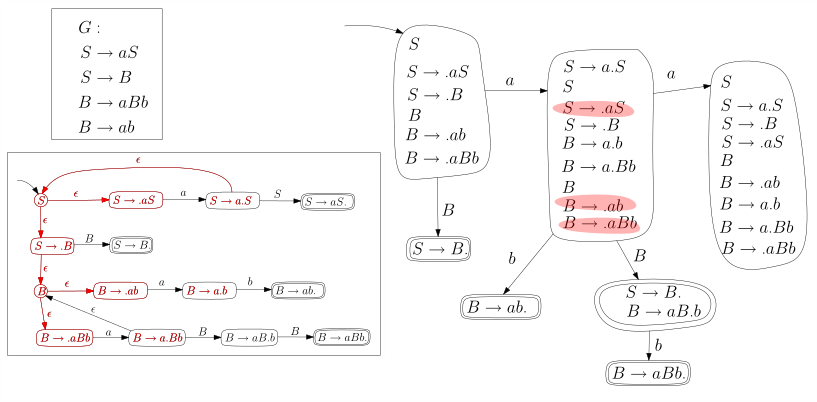
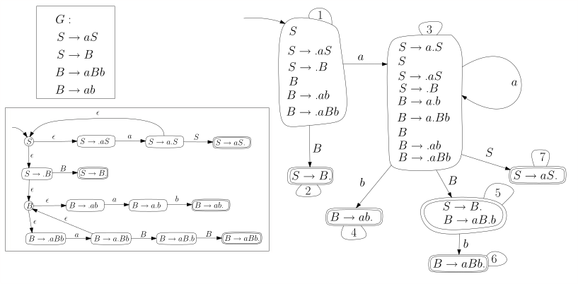

6.9 Der DK-Automat (nicht im Sommer 2026)./course1/wly/06/09-dk-automat.wly:2:11
Von der Grammatik ./course1/wly/06/09-dk-automat.wly:5:9$\hat{G}$./course1/wly/06/09-dk-automat.wly:5:27 zu einem./course1/wly/06/09-dk-automat.wly:5:36 nichtdeterministischen endlichen Automaten./course1/wly/06/09-dk-automat.wly:6:9
Um den ./course1/wly/06/09-dk-automat.wly:8:5$LR(0)$./course1/wly/06/09-dk-automat.wly:8:12-Parser./course1/wly/06/09-dk-automat.wly:8:19 gemäß ./course1/wly/06/09-dk-automat.wly:8:19Algorithmus 6.8.7 zu implementieren, müssen wir den./course1/wly/06/09-dk-automat.wly:9:5 Test ./course1/wly/06/09-dk-automat.wly:10:5$\gamma \stackrel{?}\in \Front(G)$./course1/wly/06/09-dk-automat.wly:10:10 durchführen und,./course1/wly/06/09-dk-automat.wly:10:44 falls die Antwort ./course1/wly/06/09-dk-automat.wly:11:5ja./course1/wly/06/09-dk-automat.wly:11:24 ist, die Blüte finden. Dies gelingt./course1/wly/06/09-dk-automat.wly:11:27 uns, indem wir die Grammatik ./course1/wly/06/09-dk-automat.wly:12:5$\hat{G}$./course1/wly/06/09-dk-automat.wly:12:34 in einen endlichen./course1/wly/06/09-dk-automat.wly:12:43 Automaten umwandeln. ./course1/wly/06/09-dk-automat.wly:13:5Theorem 5.3.8 und./course1/wly/06/09-dk-automat.wly:13:5 die ihm vorhergehende Konstruktion zeigen, wie man das./course1/wly/06/09-dk-automat.wly:14:5 macht. Anstatt allerdings das Theorem als "black box" zu./course1/wly/06/09-dk-automat.wly:15:5 verwenden, gehen wir die Konstruktion anhand zweier./course1/wly/06/09-dk-automat.wly:16:5 fiktiver Produktion ./course1/wly/06/09-dk-automat.wly:17:5$X \rightarrow aBcDe$./course1/wly/06/09-dk-automat.wly:17:25 und./course1/wly/06/09-dk-automat.wly:17:46 ./course1/wly/06/09-dk-automat.wly:18:5$X \rightarrow uVw$./course1/wly/06/09-dk-automat.wly:18:5 Schritt für Schritt durch. Wir./course1/wly/06/09-dk-automat.wly:18:24 erkennen die Terminale ./course1/wly/06/09-dk-automat.wly:19:5$\Sigma = \{a,c,e,u,w\}$./course1/wly/06/09-dk-automat.wly:19:28 und die./course1/wly/06/09-dk-automat.wly:19:52 Nichtterminale ./course1/wly/06/09-dk-automat.wly:20:5$N = \{X,B,D,V\}$./course1/wly/06/09-dk-automat.wly:20:20../course1/wly/06/09-dk-automat.wly:20:37 In ./course1/wly/06/09-dk-automat.wly:20:37$\dk{G}$./course1/wly/06/09-dk-automat.wly:20:42 sind./course1/wly/06/09-dk-automat.wly:20:50 \{a,c,e,u,w,A,B,D,V\} alles Terminale, und die./course1/wly/06/09-dk-automat.wly:21:5 Nichtterminale sind./course1/wly/06/09-dk-automat.wly:22:5 ./course1/wly/06/09-dk-automat.wly:23:5$\dk{N} = \{\dk{X}, \dk{B}, \dk{D}, \dk{V}\}.$./course1/wly/06/09-dk-automat.wly:23:5 Die./course1/wly/06/09-dk-automat.wly:23:51 Produktionen von ./course1/wly/06/09-dk-automat.wly:24:5$\hat{G}$./course1/wly/06/09-dk-automat.wly:24:22 sind./course1/wly/06/09-dk-automat.wly:24:31
$$
\begin{align*}
\dk{X}&
\rightarrow a\dk{B} \\ \dk{X}&\rightarrow a\dkt{B}c\dk{D} \\ \dk{X}
&\rightarrow a\dkt{B}c\dkt{D}e \\&\\ \dk{X}&\rightarrow u\dk{V}
\dk{X}&\rightarrow u\dkt{V}w
\end{align*}
$$./course1/wly/06/09-dk-automat.wly:26:5
Diese übersetzen wir in einen verallgemeinert./course1/wly/06/09-dk-automat.wly:33:5 nichtdeterministischen Automaten, bei dem jede Kante mit./course1/wly/06/09-dk-automat.wly:34:5 einem Wort ./course1/wly/06/09-dk-automat.wly:35:5$\beta \in (\Sigma \cup N)^*$./course1/wly/06/09-dk-automat.wly:35:16,./course1/wly/06/09-dk-automat.wly:35:45 also aus./course1/wly/06/09-dk-automat.wly:35:45 ./course1/wly/06/09-dk-automat.wly:36:5Terminalen./course1/wly/06/09-dk-automat.wly:36:6 der Grammatik ./course1/wly/06/09-dk-automat.wly:36:17$\dk{G}$./course1/wly/06/09-dk-automat.wly:36:32 beschriftet ist:./course1/wly/06/09-dk-automat.wly:36:40
Wir brechen die Kanten in Stücke, so dass jede mit genau./course1/wly/06/09-dk-automat.wly:43:5 einem Zeichen beschriftet ist:./course1/wly/06/09-dk-automat.wly:44:5
Nochmal: jede Kante ist mit einem ./course1/wly/06/09-dk-automat.wly:51:5Terminalsymbol./course1/wly/06/09-dk-automat.wly:51:40 ./course1/wly/06/09-dk-automat.wly:51:55 beschriftet. Die Symbole ./course1/wly/06/09-dk-automat.wly:52:5$B, D, V$./course1/wly/06/09-dk-automat.wly:52:30 sind ./course1/wly/06/09-dk-automat.wly:52:39Terminale./course1/wly/06/09-dk-automat.wly:52:46 in der./course1/wly/06/09-dk-automat.wly:52:56 Grammatik ./course1/wly/06/09-dk-automat.wly:53:5$\dk{G}$./course1/wly/06/09-dk-automat.wly:53:15../course1/wly/06/09-dk-automat.wly:53:23 Wenn wir ./course1/wly/06/09-dk-automat.wly:53:23$\epsilon$./course1/wly/06/09-dk-automat.wly:53:34 -Übergänge./course1/wly/06/09-dk-automat.wly:53:44 zulassen, können wir den Automaten übersichtlicher./course1/wly/06/09-dk-automat.wly:54:5 gestalten und mehrere Zustände zusammenfassen:./course1/wly/06/09-dk-automat.wly:55:5
 course1/public/img/context-free/LR/hat-G-to-generalized-automaton-numbered-names.svg
course1/public/img/context-free/LR/hat-G-to-generalized-automaton-numbered-names.svg
Wir werden uns noch bessere Namen für die Zwischenzustände./course1/wly/06/09-dk-automat.wly:62:5 ausdenken. Wenn wir uns an die Rechtsableitungsbäume mit./course1/wly/06/09-dk-automat.wly:63:5 Stamm, linkem Rand, Blüte und rechtem Rest erinnern, dann./course1/wly/06/09-dk-automat.wly:64:5 haben die Zwischenzustände eine klare Bedeutung: der./course1/wly/06/09-dk-automat.wly:65:5 Zustand ./course1/wly/06/09-dk-automat.wly:66:5$4$./course1/wly/06/09-dk-automat.wly:66:13 oben zum Beispiel bedeutet, dass der Knoten ./course1/wly/06/09-dk-automat.wly:66:16$X$./course1/wly/06/09-dk-automat.wly:66:61 ./course1/wly/06/09-dk-automat.wly:66:64 im Stamm mit ./course1/wly/06/09-dk-automat.wly:67:5$a, B, c, D, e$./course1/wly/06/09-dk-automat.wly:67:18 beschriftete Kinder hat und./course1/wly/06/09-dk-automat.wly:67:33 wir uns bereits entschieden haben, dass ./course1/wly/06/09-dk-automat.wly:68:5$a$./course1/wly/06/09-dk-automat.wly:68:45,./course1/wly/06/09-dk-automat.wly:68:48 ./course1/wly/06/09-dk-automat.wly:68:48$B$./course1/wly/06/09-dk-automat.wly:68:50 und ./course1/wly/06/09-dk-automat.wly:68:53$c$./course1/wly/06/09-dk-automat.wly:68:58 ./course1/wly/06/09-dk-automat.wly:68:61 ./course1/wly/06/09-dk-automat.wly:69:5Blätter./course1/wly/06/09-dk-automat.wly:69:6 sein sollen, also zum linken Rand gehören. Der./course1/wly/06/09-dk-automat.wly:69:14 Übergang ./course1/wly/06/09-dk-automat.wly:70:5$\boxed{4} \step{D} \boxed{5}$./course1/wly/06/09-dk-automat.wly:70:14 entspricht dann./course1/wly/06/09-dk-automat.wly:70:44 der Entscheidung, auch ./course1/wly/06/09-dk-automat.wly:71:5$D$./course1/wly/06/09-dk-automat.wly:71:28 zu einem Blatt zu machen,./course1/wly/06/09-dk-automat.wly:71:31 während ./course1/wly/06/09-dk-automat.wly:72:5$\boxed{4} \step{\epsilon} \dk{D}$./course1/wly/06/09-dk-automat.wly:72:13 der./course1/wly/06/09-dk-automat.wly:72:47 Entscheidung entspricht, ./course1/wly/06/09-dk-automat.wly:73:5$D$./course1/wly/06/09-dk-automat.wly:73:30 zu einem Knoten im Stamm zu./course1/wly/06/09-dk-automat.wly:73:33 machen und eine ./course1/wly/06/09-dk-automat.wly:74:5$D$./course1/wly/06/09-dk-automat.wly:74:21-Produktion./course1/wly/06/09-dk-automat.wly:74:24 anzuwenden. Die beiden./course1/wly/06/09-dk-automat.wly:74:24 ./course1/wly/06/09-dk-automat.wly:75:5$\epsilon$./course1/wly/06/09-dk-automat.wly:75:5-Übergänge./course1/wly/06/09-dk-automat.wly:75:15 von ./course1/wly/06/09-dk-automat.wly:75:15$\dk{X}$./course1/wly/06/09-dk-automat.wly:75:30 nach ./course1/wly/06/09-dk-automat.wly:75:38$\boxed{1}$./course1/wly/06/09-dk-automat.wly:75:44 bzw../course1/wly/06/09-dk-automat.wly:75:55 ./course1/wly/06/09-dk-automat.wly:76:5$\boxed{7}$./course1/wly/06/09-dk-automat.wly:76:5 stellen einfach sicher, dass wir uns erst./course1/wly/06/09-dk-automat.wly:76:16 entscheiden, mit welcher Produktion wir den Stammknoten ./course1/wly/06/09-dk-automat.wly:77:5$X$./course1/wly/06/09-dk-automat.wly:77:61 ./course1/wly/06/09-dk-automat.wly:77:64 expandieren, bevor wir weitermachen. Daher nennen wir./course1/wly/06/09-dk-automat.wly:78:5 Zustand ./course1/wly/06/09-dk-automat.wly:79:5$\boxed{4}$./course1/wly/06/09-dk-automat.wly:79:13 um in ./course1/wly/06/09-dk-automat.wly:79:24$\boxed{X \rightarrow aBc.De}$./course1/wly/06/09-dk-automat.wly:79:31,./course1/wly/06/09-dk-automat.wly:79:61 ./course1/wly/06/09-dk-automat.wly:79:61 wobei der Punkt ./course1/wly/06/09-dk-automat.wly:80:5$.$./course1/wly/06/09-dk-automat.wly:80:21 markiert, welchen Teil der rechten./course1/wly/06/09-dk-automat.wly:80:24 Seite wir bereits gelesen haben. Wir erhalten folgendes./course1/wly/06/09-dk-automat.wly:81:5 Bild:./course1/wly/06/09-dk-automat.wly:82:5
 course1/public/img/context-free/LR/hat-G-to-DK.svg
course1/public/img/context-free/LR/hat-G-to-DK.svg
Die ./course1/wly/06/09-dk-automat.wly:89:9$a^{m+k}b^m$./course1/wly/06/09-dk-automat.wly:89:13-Grammatik./course1/wly/06/09-dk-automat.wly:89:25
Wir illustrieren obige Vorgehensweise nun anhand der./course1/wly/06/09-dk-automat.wly:91:5 Grammatik./course1/wly/06/09-dk-automat.wly:92:5
$$
\begin{align*}
G&: \\ S&\rightarrow aS \\ S&\rightarrow B \\ B&
\rightarrow aBb \\ B&\rightarrow ab
\end{align*}
$$./course1/wly/06/09-dk-automat.wly:94:5
Laut Gebrauchsanweisung aus dem letzten Teilkapitel hat./course1/wly/06/09-dk-automat.wly:99:5 die Grammatik ./course1/wly/06/09-dk-automat.wly:100:5$\dk{G}$./course1/wly/06/09-dk-automat.wly:100:19 die Terminalsymbole./course1/wly/06/09-dk-automat.wly:100:27 ./course1/wly/06/09-dk-automat.wly:101:5$\Sigma \cup N = \{a, b, S, B\}$./course1/wly/06/09-dk-automat.wly:101:5 und die Nichtterminale./course1/wly/06/09-dk-automat.wly:101:37 ./course1/wly/06/09-dk-automat.wly:102:5$\dk{N} = \{\dk{S}, \dk{B}\}$./course1/wly/06/09-dk-automat.wly:102:5../course1/wly/06/09-dk-automat.wly:102:34 Die Produktionen von./course1/wly/06/09-dk-automat.wly:102:34 ./course1/wly/06/09-dk-automat.wly:103:5$\dk{G}$./course1/wly/06/09-dk-automat.wly:103:5 ergeben sich wie folgt:./course1/wly/06/09-dk-automat.wly:103:13
$$
\begin{align*}
\begin{array}{l|l} \textnormal{Produktion in $G$}&
\textnormal{Produktion in $\hat{G}$} \\ \hline % % S \rightarrow aS&
{\dk{S}} \rightarrow \dkt{a} \dk{S}\\&{\dk{S}} \rightarrow \dkt{a}
\dkt{S}\\ \hline % S \rightarrow B&{\dk{S}} \rightarrow \dk{B}\\&
{\dk{S}} \rightarrow \dkt{B}\\ \hline % B \rightarrow aBb&{\dk{B}}
\rightarrow \dkt{a}\dk{B}\\&{\dk{B}} \rightarrow
\dkt{a}\dkt{B}\dkt{b}\\ \hline % B \rightarrow ab&{\dk{B}} \rightarrow
\dkt{ab} \end{array}
\end{align*}
$$./course1/wly/06/09-dk-automat.wly:105:5
In dieser Grammatik betrachten wir die Rechtsableitung./course1/wly/06/09-dk-automat.wly:116:5
$$
\begin{align*}
S \Step{} aS \Step{} aaS \Step{} aaB \Step{} aaaBb
\Step{} aaaaBbb \Step{} aaaaaBbbb
\end{align*}
$$./course1/wly/06/09-dk-automat.wly:118:5
Es gilt ./course1/wly/06/09-dk-automat.wly:123:5$\front(aaaaaBbbb) = aaaaaBb$./course1/wly/06/09-dk-automat.wly:123:13../course1/wly/06/09-dk-automat.wly:123:42 In ./course1/wly/06/09-dk-automat.wly:123:42$\hat{G}$./course1/wly/06/09-dk-automat.wly:123:47 ./course1/wly/06/09-dk-automat.wly:123:56 entspricht die obige Rechtsableitung der Ableitung./course1/wly/06/09-dk-automat.wly:124:5
$$
\begin{align*}
\hat{S} \Step{} a\hat{S} \Step{} aa\hat{S} \Step{}
aa\hat{B} \Step{} aaa\hat{B} \Step{} aaaaBb
\end{align*}
$$./course1/wly/06/09-dk-automat.wly:126:5
Den nichtdeterministischen DK-Automaten (mit ./course1/wly/06/09-dk-automat.wly:131:5$\epsilon$./course1/wly/06/09-dk-automat.wly:131:50 ./course1/wly/06/09-dk-automat.wly:131:60 -Übergängen) können wir nun Schritt für Schritt zeichnen:./course1/wly/06/09-dk-automat.wly:132:5
course1/public/img/context-free/LR/dk-automaton-5-nea-aaabb/01.svg
course1/public/img/context-free/LR/dk-automaton-5-nea-aaabb/02.svg
course1/public/img/context-free/LR/dk-automaton-5-nea-aaabb/03.svg
 course1/public/img/context-free/LR/dk-automaton-5-nea-aaabb/04.svg
course1/public/img/context-free/LR/dk-automaton-5-nea-aaabb/04.svg
 course1/public/img/context-free/LR/dk-automaton-5-nea-aaabb/05.svg
course1/public/img/context-free/LR/dk-automaton-5-nea-aaabb/05.svg
course1/public/img/context-free/LR/dk-automaton-5-nea-aaabb/06.svg
 course1/public/img/context-free/LR/dk-automaton-5-nea-aaabb/07.svg
course1/public/img/context-free/LR/dk-automaton-5-nea-aaabb/07.svg
 course1/public/img/context-free/LR/dk-automaton-5-nea-aaabb/08.svg
course1/public/img/context-free/LR/dk-automaton-5-nea-aaabb/08.svg
course1/public/img/context-free/LR/dk-automaton-5-nea-aaabb/09.svg
course1/public/img/context-free/LR/dk-automaton-5-nea-aaabb/10.svg
course1/public/img/context-free/LR/dk-automaton-5-nea-aaabb/11.svg
Der nichtdeterministische DK-Automat./course1/wly/06/09-dk-automat.wly:149:9
Definition 6.9.1./course1/wly/06/09-dk-automat.wly:151:5 ./course1/wly/06/09-dk-automat.wly:151:5 Für eine kontextfreie Grammatik ist der./course1/wly/06/09-dk-automat.wly:152:9 nichtdeterministische DK-Automat (NDK-Automat) ein./course1/wly/06/09-dk-automat.wly:153:9 nichtdeterministischer endlicher Automat mit ./course1/wly/06/09-dk-automat.wly:154:9$\epsilon$./course1/wly/06/09-dk-automat.wly:154:54 ./course1/wly/06/09-dk-automat.wly:154:64 -Übergängen, den wir wie folgt konstruieren:./course1/wly/06/09-dk-automat.wly:155:9
-
Für jede Produktion ./course1/wly/06/09-dk-automat.wly:159:17$X \rightarrow \beta$./course1/wly/06/09-dk-automat.wly:159:37 gibt es einen./course1/wly/06/09-dk-automat.wly:159:58 Zustandsübergang./course1/wly/06/09-dk-automat.wly:160:17 ./course1/wly/06/09-dk-automat.wly:161:17$\boxed{X} \step{\epsilon} \boxed{X \step{} . \beta}$./course1/wly/06/09-dk-automat.wly:161:17
-
Für jede Zerlegung ./course1/wly/06/09-dk-automat.wly:164:17$\beta = \beta_1 \sigma \beta_2$./course1/wly/06/09-dk-automat.wly:164:36 gibt./course1/wly/06/09-dk-automat.wly:164:68 es den Zustandsübergang./course1/wly/06/09-dk-automat.wly:165:17 ./course1/wly/06/09-dk-automat.wly:166:17$\boxed{X \step{} \beta_1 . \sigma \beta_2} \step{\sigma} \boxed{X \step{} \beta_1 \sigma . \beta_2}$./course1/wly/06/09-dk-automat.wly:166:17
-
Falls ./course1/wly/06/09-dk-automat.wly:170:17$\sigma$./course1/wly/06/09-dk-automat.wly:170:23 ein Nichtterminal ./course1/wly/06/09-dk-automat.wly:170:31$Y$./course1/wly/06/09-dk-automat.wly:170:50 ist, also./course1/wly/06/09-dk-automat.wly:170:53 ./course1/wly/06/09-dk-automat.wly:171:17$\beta = \beta_1 Y \beta_2$./course1/wly/06/09-dk-automat.wly:171:17,./course1/wly/06/09-dk-automat.wly:171:44 gibt es zusätzlich noch den./course1/wly/06/09-dk-automat.wly:171:44 Übergang./course1/wly/06/09-dk-automat.wly:172:17 ./course1/wly/06/09-dk-automat.wly:173:17$\boxed{X \step{} \beta_1 . Y \beta_2} \step{\epsilon} \boxed{Y}$./course1/wly/06/09-dk-automat.wly:173:17
Die Interpretation dieser Übergänge in./course1/wly/06/09-dk-automat.wly:176:9 Rechtsableitungsbaum-Begriffen ist: (1) heißt, dass./course1/wly/06/09-dk-automat.wly:177:9 ./course1/wly/06/09-dk-automat.wly:178:9$\boxed{X}$./course1/wly/06/09-dk-automat.wly:178:9 ein Stammknoten ist und wir ihn anhand der./course1/wly/06/09-dk-automat.wly:178:20 Regel ./course1/wly/06/09-dk-automat.wly:179:9$X \rightarrow \beta$./course1/wly/06/09-dk-automat.wly:179:15 expandieren; wir erschaffen./course1/wly/06/09-dk-automat.wly:179:36 also Kinder, die mit den Symbolen von ./course1/wly/06/09-dk-automat.wly:180:9$\beta$./course1/wly/06/09-dk-automat.wly:180:47 beschriftet./course1/wly/06/09-dk-automat.wly:180:54 sind. (2) heißt, dass wir uns bereits entschieden haben,./course1/wly/06/09-dk-automat.wly:181:9 die Kinder ./course1/wly/06/09-dk-automat.wly:182:9$\beta_1$./course1/wly/06/09-dk-automat.wly:182:20 von ./course1/wly/06/09-dk-automat.wly:182:29$\boxed{X}$./course1/wly/06/09-dk-automat.wly:182:34 nicht zu expandieren,./course1/wly/06/09-dk-automat.wly:182:45 sie also zum linken Rand werden zu lassen, und diese./course1/wly/06/09-dk-automat.wly:183:9 Entscheidung nun auch für das Symbol ./course1/wly/06/09-dk-automat.wly:184:9$\sigma$./course1/wly/06/09-dk-automat.wly:184:46 treffen; (3)./course1/wly/06/09-dk-automat.wly:184:54 bedeutet, dass wir uns entschließen ./course1/wly/06/09-dk-automat.wly:185:9$\sigma$./course1/wly/06/09-dk-automat.wly:185:45 (das hier ein./course1/wly/06/09-dk-automat.wly:185:53 Nichtterminal ./course1/wly/06/09-dk-automat.wly:186:9$Y$./course1/wly/06/09-dk-automat.wly:186:23 ist) weiter zu expandieren, es also./course1/wly/06/09-dk-automat.wly:186:26 nicht dem linken Rand zuordnen, sondern zu einem./course1/wly/06/09-dk-automat.wly:187:9 Stammknoten werden lassen, uns aber noch nicht entschlossen./course1/wly/06/09-dk-automat.wly:188:9 haben, welche Produktion ./course1/wly/06/09-dk-automat.wly:189:9$Y \rightarrow ?$./course1/wly/06/09-dk-automat.wly:189:34 wir anwenden./course1/wly/06/09-dk-automat.wly:189:51 wollen. Der Startzustand ist ./course1/wly/06/09-dk-automat.wly:190:9$\boxed{S}$./course1/wly/06/09-dk-automat.wly:190:38../course1/wly/06/09-dk-automat.wly:190:49 Jeder Zustand./course1/wly/06/09-dk-automat.wly:190:49 der Form ./course1/wly/06/09-dk-automat.wly:191:9$\boxed{X \step{} \beta .}$./course1/wly/06/09-dk-automat.wly:191:18 ist ein./course1/wly/06/09-dk-automat.wly:191:45 akzeptierender Zustand../course1/wly/06/09-dk-automat.wly:192:9
Den NDK-Automaten deterministisch machen./course1/wly/06/09-dk-automat.wly:195:9
Wir wissen ja bereits, wie man einen./course1/wly/06/09-dk-automat.wly:197:5 nichtdeterministischen Automaten deterministisch macht: die./course1/wly/06/09-dk-automat.wly:198:5 Potenzmengenkonstruktion aus ./course1/wly/06/09-dk-automat.wly:199:5Kapitel 5.3.7. Hier./course1/wly/06/09-dk-automat.wly:199:5 können wir diese leider nicht direkt anwenden, da der obige./course1/wly/06/09-dk-automat.wly:200:5 Automat ./course1/wly/06/09-dk-automat.wly:201:5$\epsilon$./course1/wly/06/09-dk-automat.wly:201:13 -Übergänge hat. Wie geht das also nun?./course1/wly/06/09-dk-automat.wly:201:23 Im deterministischen Automaten ist wie bei der./course1/wly/06/09-dk-automat.wly:202:5 Potenzmengenkonstruktion jeder Zustand eine ./course1/wly/06/09-dk-automat.wly:203:5Menge./course1/wly/06/09-dk-automat.wly:203:50 ./course1/wly/06/09-dk-automat.wly:203:56$R$./course1/wly/06/09-dk-automat.wly:203:57 ./course1/wly/06/09-dk-automat.wly:203:60 von Zuständen des nichtdeterministischen Automaten. Wenn./course1/wly/06/09-dk-automat.wly:204:5 wir nun in eine solche Menge ./course1/wly/06/09-dk-automat.wly:205:5$R$./course1/wly/06/09-dk-automat.wly:205:34 einen Zustand ./course1/wly/06/09-dk-automat.wly:205:37$q$./course1/wly/06/09-dk-automat.wly:205:52 ./course1/wly/06/09-dk-automat.wly:205:55 einfügen, dann fügen wir auch alle Zustände ./course1/wly/06/09-dk-automat.wly:206:5$q'$./course1/wly/06/09-dk-automat.wly:206:49 hinzu, zu./course1/wly/06/09-dk-automat.wly:206:53 denen es einen ./course1/wly/06/09-dk-automat.wly:207:5$\epsilon$./course1/wly/06/09-dk-automat.wly:207:20 -Übergang ./course1/wly/06/09-dk-automat.wly:207:30$q \step{\epsilon} q'$./course1/wly/06/09-dk-automat.wly:207:41 ./course1/wly/06/09-dk-automat.wly:207:63 gibt. Für den obigen nichtdeterministischen Automaten sieht./course1/wly/06/09-dk-automat.wly:208:5 das dann so aus:./course1/wly/06/09-dk-automat.wly:209:5

course1/public/img/context-free/LR/dk-automaton-6-dea-aaabb/dk-dea-for-aaabb-01-01.svg
course1/public/img/context-free/LR/dk-automaton-6-dea-aaabb/dk-dea-for-aaabb-01-02.svg
 course1/public/img/context-free/LR/dk-automaton-6-dea-aaabb/dk-dea-for-aaabb-01-03.svg
course1/public/img/context-free/LR/dk-automaton-6-dea-aaabb/dk-dea-for-aaabb-01-03.svg

course1/public/img/context-free/LR/dk-automaton-6-dea-aaabb/dk-dea-for-aaabb-01-04.svg course1/public/img/context-free/LR/dk-automaton-6-dea-aaabb/dk-dea-for-aaabb-01-05.svg
course1/public/img/context-free/LR/dk-automaton-6-dea-aaabb/dk-dea-for-aaabb-01-05.svg
 course1/public/img/context-free/LR/dk-automaton-6-dea-aaabb/dk-dea-for-aaabb-01-06.svg
course1/public/img/context-free/LR/dk-automaton-6-dea-aaabb/dk-dea-for-aaabb-01-06.svg

course1/public/img/context-free/LR/dk-automaton-6-dea-aaabb/dk-dea-for-aaabb-01-07.svg
course1/public/img/context-free/LR/dk-automaton-6-dea-aaabb/dk-dea-for-aaabb-01-08.svg
 course1/public/img/context-free/LR/dk-automaton-6-dea-aaabb/dk-dea-for-aaabb-01-09.svg
course1/public/img/context-free/LR/dk-automaton-6-dea-aaabb/dk-dea-for-aaabb-01-09.svg
 course1/public/img/context-free/LR/dk-automaton-6-dea-aaabb/dk-dea-for-aaabb-01-10.svg
course1/public/img/context-free/LR/dk-automaton-6-dea-aaabb/dk-dea-for-aaabb-01-10.svg
 course1/public/img/context-free/LR/dk-automaton-6-dea-aaabb/dk-dea-for-aaabb-01-11.svg
course1/public/img/context-free/LR/dk-automaton-6-dea-aaabb/dk-dea-for-aaabb-01-11.svg
 course1/public/img/context-free/LR/dk-automaton-6-dea-aaabb/dk-dea-for-aaabb-01-12.svg
course1/public/img/context-free/LR/dk-automaton-6-dea-aaabb/dk-dea-for-aaabb-01-12.svg
 course1/public/img/context-free/LR/dk-automaton-6-dea-aaabb/dk-dea-for-aaabb-01-13.svg
course1/public/img/context-free/LR/dk-automaton-6-dea-aaabb/dk-dea-for-aaabb-01-13.svg

course1/public/img/context-free/LR/dk-automaton-6-dea-aaabb/dk-dea-for-aaabb-01-14.svg course1/public/img/context-free/LR/dk-automaton-6-dea-aaabb/dk-dea-for-aaabb-01-15.svg
course1/public/img/context-free/LR/dk-automaton-6-dea-aaabb/dk-dea-for-aaabb-01-15.svg
 course1/public/img/context-free/LR/dk-automaton-6-dea-aaabb/dk-dea-for-aaabb-01-16.svg
course1/public/img/context-free/LR/dk-automaton-6-dea-aaabb/dk-dea-for-aaabb-01-16.svg
 course1/public/img/context-free/LR/dk-automaton-6-dea-aaabb/dk-dea-for-aaabb-01-17.svg
course1/public/img/context-free/LR/dk-automaton-6-dea-aaabb/dk-dea-for-aaabb-01-17.svg
 course1/public/img/context-free/LR/dk-automaton-6-dea-aaabb/dk-dea-for-aaabb-01-18.svg
course1/public/img/context-free/LR/dk-automaton-6-dea-aaabb/dk-dea-for-aaabb-01-18.svg
 course1/public/img/context-free/LR/dk-automaton-6-dea-aaabb/dk-dea-for-aaabb-01-19.svg
course1/public/img/context-free/LR/dk-automaton-6-dea-aaabb/dk-dea-for-aaabb-01-19.svg

course1/public/img/context-free/LR/dk-automaton-6-dea-aaabb/dk-dea-for-aaabb-01-20.svg course1/public/img/context-free/LR/dk-automaton-6-dea-aaabb/dk-dea-for-aaabb-01-21.svg
course1/public/img/context-free/LR/dk-automaton-6-dea-aaabb/dk-dea-for-aaabb-01-21.svg
Und hier nochmal das Endergebnis, wobei wir die Zustände./course1/wly/06/09-dk-automat.wly:235:5 im DK-Automaten durchnummeriert haben:./course1/wly/06/09-dk-automat.wly:236:5

course1/public/img/context-free/LR/dk-automaton-6-dea-aaabb/dk-final.svgStreng genommen ist das Ergebnis kein deterministischer./course1/wly/06/09-dk-automat.wly:242:5 Automat, da zum Beispiel der Startzustand keinen./course1/wly/06/09-dk-automat.wly:243:5 ./course1/wly/06/09-dk-automat.wly:244:5$b$./course1/wly/06/09-dk-automat.wly:244:5-Übergang./course1/wly/06/09-dk-automat.wly:244:8 hat. Die Zustandsübergangsfunktion./course1/wly/06/09-dk-automat.wly:244:8 ./course1/wly/06/09-dk-automat.wly:245:5$\delta: Q \times \Sigma \rightarrow Q$./course1/wly/06/09-dk-automat.wly:245:5 ist gar keine./course1/wly/06/09-dk-automat.wly:245:44 Funktion, sondern eine ./course1/wly/06/09-dk-automat.wly:246:5partielle./course1/wly/06/09-dk-automat.wly:246:29 Funktion, da./course1/wly/06/09-dk-automat.wly:246:39 ./course1/wly/06/09-dk-automat.wly:247:5$\delta(q,\sigma)$./course1/wly/06/09-dk-automat.wly:247:5 für manche Eingabewerte undefiniert./course1/wly/06/09-dk-automat.wly:247:23 ist. Wir verwenden aber die Konvention, dass der Automat in./course1/wly/06/09-dk-automat.wly:248:5 diesem Falle in einen Todeszustand wechselt, aus dem er./course1/wly/06/09-dk-automat.wly:249:5 nicht wieder herauskommt und der nicht akzeptierend ist../course1/wly/06/09-dk-automat.wly:250:5 Dies ist übersichtlicher, als überall Todeskanten./course1/wly/06/09-dk-automat.wly:251:5 hinzuzufügen../course1/wly/06/09-dk-automat.wly:252:5
Den DK-Automaten verwenden./course1/wly/06/09-dk-automat.wly:255:9
Theorem 6.9.2 (DK-Test)../course1/wly/06/09-dk-automat.wly:257:5 Sei ./course1/wly/06/09-dk-automat.wly:258:21$G$./course1/wly/06/09-dk-automat.wly:258:26 eine kontextfreie Grammatik ohne./course1/wly/06/09-dk-automat.wly:258:29 nutzlose Nichtterminale und ei ./course1/wly/06/09-dk-automat.wly:259:9$M$./course1/wly/06/09-dk-automat.wly:259:40 der DK-Automat für die./course1/wly/06/09-dk-automat.wly:259:43 Grammatik ./course1/wly/06/09-dk-automat.wly:260:9$G$./course1/wly/06/09-dk-automat.wly:260:19../course1/wly/06/09-dk-automat.wly:260:22 Die Grammatik ./course1/wly/06/09-dk-automat.wly:260:22$G$./course1/wly/06/09-dk-automat.wly:260:38 ist LR(0) genau dann,./course1/wly/06/09-dk-automat.wly:260:41 wenn folgende zwei Bedingungen gelten:./course1/wly/06/09-dk-automat.wly:261:9
-
(DK.1) Ein akzeptierender Zustand von ./course1/wly/06/09-dk-automat.wly:265:17$M$./course1/wly/06/09-dk-automat.wly:265:55 (der ja eine./course1/wly/06/09-dk-automat.wly:265:58 Menge von Zuständen des NDK-Automaten ist) enthält genau./course1/wly/06/09-dk-automat.wly:266:17 einen akzeptierenden NDK-Zustand, also genau ein./course1/wly/06/09-dk-automat.wly:267:17 ./course1/wly/06/09-dk-automat.wly:268:17$\boxed{X \rightarrow \beta .}$./course1/wly/06/09-dk-automat.wly:268:17
-
(DK.2) Wenn ./course1/wly/06/09-dk-automat.wly:271:17$q$./course1/wly/06/09-dk-automat.wly:271:29 ein akzeptierender Zustand von ./course1/wly/06/09-dk-automat.wly:271:32$M$./course1/wly/06/09-dk-automat.wly:271:64 ist und./course1/wly/06/09-dk-automat.wly:271:67 ./course1/wly/06/09-dk-automat.wly:272:17$q \step{\sigma} q'$./course1/wly/06/09-dk-automat.wly:272:17,./course1/wly/06/09-dk-automat.wly:272:37 dann ist ./course1/wly/06/09-dk-automat.wly:272:37$\sigma$./course1/wly/06/09-dk-automat.wly:272:48 ein Nichtterminal../course1/wly/06/09-dk-automat.wly:272:56
Wenn diese beiden Bedingungen gelten, sagen wir, dass ./course1/wly/06/09-dk-automat.wly:274:9$G$./course1/wly/06/09-dk-automat.wly:274:63 ./course1/wly/06/09-dk-automat.wly:274:66 den DK-Test bestanden hat. Das Theorem sagt also: ./course1/wly/06/09-dk-automat.wly:275:9$G$./course1/wly/06/09-dk-automat.wly:275:59 ist./course1/wly/06/09-dk-automat.wly:275:62 LR(0) genau dann, wenn es den DK-Test besteht../course1/wly/06/09-dk-automat.wly:276:9
Beweisskizze. Wir erinnern den Leser noch einmal an die alternative./course1/wly/06/09-dk-automat.wly:280:9 Charakterisierung von LR(0)-Sprachen, nämlich :./course1/wly/06/09-dk-automat.wly:281:9
./course1/wly/06/09-dk-automat.wly:284:14Lemma 6.7.6, noch einmal ((LR0),./course1/wly/06/09-dk-automat.wly:284:14 äquivalente Formulierung)../course1/wly/06/09-dk-automat.wly:285:13 Eine Grammatik ./course1/wly/06/09-dk-automat.wly:285:40$G$./course1/wly/06/09-dk-automat.wly:285:56 ist LR(0)./course1/wly/06/09-dk-automat.wly:285:59 genau dann, wenn für alle korrekten Linksreduktionsschritte./course1/wly/06/09-dk-automat.wly:286:13 ./course1/wly/06/09-dk-automat.wly:287:13$\alpha \beta w \rstep{} \alpha Xw$./course1/wly/06/09-dk-automat.wly:287:13 und./course1/wly/06/09-dk-automat.wly:287:48 ./course1/wly/06/09-dk-automat.wly:288:13$\alpha' \beta' w' \rstep{} \alpha' X'w'$./course1/wly/06/09-dk-automat.wly:288:13 gilt:./course1/wly/06/09-dk-automat.wly:288:54
-
Falls ./course1/wly/06/09-dk-automat.wly:292:21$\alpha \beta = \alpha' \beta'$./course1/wly/06/09-dk-automat.wly:292:27 dann auch./course1/wly/06/09-dk-automat.wly:292:58 ./course1/wly/06/09-dk-automat.wly:293:21$\beta = \beta'$./course1/wly/06/09-dk-automat.wly:293:21 und ./course1/wly/06/09-dk-automat.wly:293:37$X= X'$./course1/wly/06/09-dk-automat.wly:293:42;./course1/wly/06/09-dk-automat.wly:293:49 in Worten: wenn die Fronten./course1/wly/06/09-dk-automat.wly:293:49 identisch sind, dann auch die Reduktionsschritte../course1/wly/06/09-dk-automat.wly:294:21
-
Wenn ./course1/wly/06/09-dk-automat.wly:297:21$\alpha' \beta' = \alpha \beta \varphi$./course1/wly/06/09-dk-automat.wly:297:26 und./course1/wly/06/09-dk-automat.wly:297:65 ./course1/wly/06/09-dk-automat.wly:298:21$|\varphi| \geq 1$./course1/wly/06/09-dk-automat.wly:298:21,./course1/wly/06/09-dk-automat.wly:298:39 dann ./course1/wly/06/09-dk-automat.wly:298:39$\varphi \not \in \Sigma^*$./course1/wly/06/09-dk-automat.wly:298:46;./course1/wly/06/09-dk-automat.wly:298:73 in./course1/wly/06/09-dk-automat.wly:298:73 Worten: wenn ./course1/wly/06/09-dk-automat.wly:299:21$\front(\gamma)$./course1/wly/06/09-dk-automat.wly:299:34 ein echter Präfix von./course1/wly/06/09-dk-automat.wly:299:50 ./course1/wly/06/09-dk-automat.wly:300:21$\front(\gamma')$./course1/wly/06/09-dk-automat.wly:300:21 ist, dann muss in dem überstehenden Teil./course1/wly/06/09-dk-automat.wly:300:38 von ./course1/wly/06/09-dk-automat.wly:301:21$\front(\gamma)$./course1/wly/06/09-dk-automat.wly:301:25 mindestens ein Nichtterminal./course1/wly/06/09-dk-automat.wly:301:41 vorkommen../course1/wly/06/09-dk-automat.wly:302:21
Es ist nicht schwer zu sehen, dass (DK.1) äquivalent zu./course1/wly/06/09-dk-automat.wly:304:9 Punkt 1 des Lemmas ist. Wenden wir uns (DK.2) und Punkt 2./course1/wly/06/09-dk-automat.wly:305:9 zu. Wenn Punkt 2 ./course1/wly/06/09-dk-automat.wly:306:9nicht./course1/wly/06/09-dk-automat.wly:306:27 gilt, dann gibt es korrekte./course1/wly/06/09-dk-automat.wly:306:33 Reduktionsschritte./course1/wly/06/09-dk-automat.wly:307:9
$$
\begin{align*}
\alpha \beta w \rstep{} \alpha X w \\ \alpha \beta
\sigma w' = \alpha' \beta' w' \rstep{} \alpha' X' w'
\end{align*}
$$./course1/wly/06/09-dk-automat.wly:309:9
Wenn wir dem Automaten den Präfix ./course1/wly/06/09-dk-automat.wly:314:9$\alpha \beta$./course1/wly/06/09-dk-automat.wly:314:43 füttern,./course1/wly/06/09-dk-automat.wly:314:57 bringt er uns in einen Zustand, der die./course1/wly/06/09-dk-automat.wly:315:9 ./course1/wly/06/09-dk-automat.wly:316:9$\boxed{X \rightarrow \beta.}$./course1/wly/06/09-dk-automat.wly:316:9 enthält, da ./course1/wly/06/09-dk-automat.wly:316:39$\alpha \beta$./course1/wly/06/09-dk-automat.wly:316:52 ./course1/wly/06/09-dk-automat.wly:316:66 ja eine Front ist. Dieser Zustand muss allerdings einen./course1/wly/06/09-dk-automat.wly:317:9 Übergang haben, der mit ./course1/wly/06/09-dk-automat.wly:318:9$\sigma$./course1/wly/06/09-dk-automat.wly:318:33 gelabelt ist, dem ersten./course1/wly/06/09-dk-automat.wly:318:41 Zeichen von ./course1/wly/06/09-dk-automat.wly:319:9$\varphi$./course1/wly/06/09-dk-automat.wly:319:21,./course1/wly/06/09-dk-automat.wly:319:30 da ja ./course1/wly/06/09-dk-automat.wly:319:30$\alpha \beta \sigma$./course1/wly/06/09-dk-automat.wly:319:38 ein./course1/wly/06/09-dk-automat.wly:319:59 Präfix der Front ./course1/wly/06/09-dk-automat.wly:320:9$\alpha' \beta'$./course1/wly/06/09-dk-automat.wly:320:26 ist. Somit gilt (DK.2)./course1/wly/06/09-dk-automat.wly:320:42 nicht. Wenn umgekehrt (DK.2) nicht gilt, dann gibt es einen./course1/wly/06/09-dk-automat.wly:321:9 akzeptierenden Zustand ./course1/wly/06/09-dk-automat.wly:322:9$q$./course1/wly/06/09-dk-automat.wly:322:32 (der also./course1/wly/06/09-dk-automat.wly:322:35 ./course1/wly/06/09-dk-automat.wly:323:9$\boxed{X\rightarrow \beta.}$./course1/wly/06/09-dk-automat.wly:323:9 enthält) und eine ausgehende./course1/wly/06/09-dk-automat.wly:323:38 Kante ./course1/wly/06/09-dk-automat.wly:324:9$q \step{\sigma} q'$./course1/wly/06/09-dk-automat.wly:324:15 mit einem Terminal ./course1/wly/06/09-dk-automat.wly:324:35$\sigma$./course1/wly/06/09-dk-automat.wly:324:55../course1/wly/06/09-dk-automat.wly:324:63
Übungsaufgabe 6.9.1./course1/wly/06/09-dk-automat.wly:326:9 ./course1/wly/06/09-dk-automat.wly:326:9 Zeigen Sie: wenn ./course1/wly/06/09-dk-automat.wly:327:13$G$./course1/wly/06/09-dk-automat.wly:327:30 keine nutzlosen Nichtterminale hat,./course1/wly/06/09-dk-automat.wly:327:33 dann gibt es im NDK-Automaten für jeden Zustand ./course1/wly/06/09-dk-automat.wly:328:13$q$./course1/wly/06/09-dk-automat.wly:328:61 eine./course1/wly/06/09-dk-automat.wly:328:64 Übergangsfolge ./course1/wly/06/09-dk-automat.wly:329:13$q \steps{v} q'$./course1/wly/06/09-dk-automat.wly:329:28 zu einem akzeptierenden./course1/wly/06/09-dk-automat.wly:329:44 Zustand ./course1/wly/06/09-dk-automat.wly:330:13$q'$./course1/wly/06/09-dk-automat.wly:330:21,./course1/wly/06/09-dk-automat.wly:330:25 wobei ./course1/wly/06/09-dk-automat.wly:330:25$v$./course1/wly/06/09-dk-automat.wly:330:33 ausschließlich aus ./course1/wly/06/09-dk-automat.wly:330:36$G$./course1/wly/06/09-dk-automat.wly:330:56 -Terminalen./course1/wly/06/09-dk-automat.wly:330:59 besteht, also ./course1/wly/06/09-dk-automat.wly:331:13$v \in \Sigma^*$./course1/wly/06/09-dk-automat.wly:331:27../course1/wly/06/09-dk-automat.wly:331:43 Zeigen Sie das selbe für./course1/wly/06/09-dk-automat.wly:331:43 den DK-Automaten../course1/wly/06/09-dk-automat.wly:332:13
Es gibt also einen Weg ./course1/wly/06/09-dk-automat.wly:334:9$q \step{\sigma} q' \steps{v} q''$./course1/wly/06/09-dk-automat.wly:334:32 ./course1/wly/06/09-dk-automat.wly:334:66 für ./course1/wly/06/09-dk-automat.wly:335:9$v \in \Sigma^*$./course1/wly/06/09-dk-automat.wly:335:13 und einen akzeptierenden Zustand./course1/wly/06/09-dk-automat.wly:335:29 ./course1/wly/06/09-dk-automat.wly:336:9$q''$./course1/wly/06/09-dk-automat.wly:336:9../course1/wly/06/09-dk-automat.wly:336:14 Es sind also sowohl ./course1/wly/06/09-dk-automat.wly:336:14$\alpha \beta$./course1/wly/06/09-dk-automat.wly:336:36 als auch./course1/wly/06/09-dk-automat.wly:336:50 ./course1/wly/06/09-dk-automat.wly:337:9$\alpha \beta \sigma v$./course1/wly/06/09-dk-automat.wly:337:9 Fronten von ./course1/wly/06/09-dk-automat.wly:337:32$G$./course1/wly/06/09-dk-automat.wly:337:45,./course1/wly/06/09-dk-automat.wly:337:48 und ./course1/wly/06/09-dk-automat.wly:337:48$\sigma v$./course1/wly/06/09-dk-automat.wly:337:54 ./course1/wly/06/09-dk-automat.wly:337:64 besteht nur aus Terminalen. Das heißt, dass Punkt 2 der./course1/wly/06/09-dk-automat.wly:338:9 Schlussfolgerung nicht gilt../course1/wly/06/09-dk-automat.wly:339:9
LR(1)-Grammatiken./course1/wly/06/09-dk-automat.wly:342:9
Hier ist der nichtdeterministische Automat für ./course1/wly/06/09-dk-automat.wly:344:5$G$./course1/wly/06/09-dk-automat.wly:344:52 mit./course1/wly/06/09-dk-automat.wly:344:55 Lookahead 1../course1/wly/06/09-dk-automat.wly:345:5
Jetzt machen wir den Automaten deterministisch:./course1/wly/06/09-dk-automat.wly:352:5